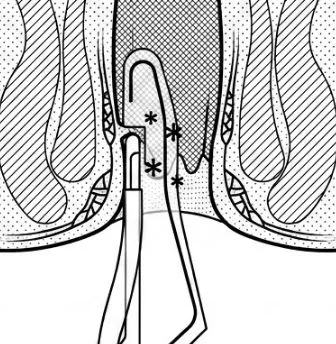
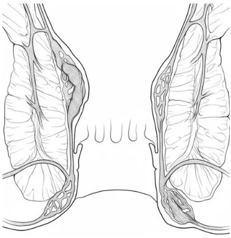

1治療介紹
- 治療方式：冷凝刀（HET）以溫控探頭經肛門夾住齒狀線以上的內痔組織與供應血管，用約 55 至 60°C 的低溫熱能（傳統電燒約 400°C）阻斷血流，讓痔瘡逐漸萎縮。不需要切割與縫合。
- 治療時間：過程約 15 至 20 分鐘。治療後在診所觀察 30 分鐘，沒有異狀即可回家，不需住院。
- 治療感受：治療位置在齒狀線以上，這一段痛覺神經較少，多數人只感覺輕微溫熱或脹感。
- 保留肛門組織：不切除肛門軟墊組織（anal cushions），可降低肛門狹窄與失禁的風險。

2哪些痔瘡適合？
| 適合 | 第一度與第二度內痔（出血、輕微脫垂） |
|---|
| 需醫師評估 | 輕微的第三度內痔 |
|---|
| 不適合 | 外痔（外痔皮膚神經豐富，不適用此方法）、嚴重的第四度脫垂內痔、急性血栓性痔瘡 |
|---|
3治療前請注意
- 冷凝刀治療前，宜先接受全大腸鏡檢查。一年內做過全大腸鏡者，可改以乙狀結腸鏡評估。
- 治療當天醫師會先以內視鏡再次評估，確認適合冷凝刀才會進行治療。
- 清腸與禁食方式，依大腸鏡同意書的說明。
- 正在服用抗血小板藥物或抗凝血劑，請主動告知，由醫師評估是否需要停藥。
4治療後可能出現的狀況
- 治療後幾天內可能有肛門脹感、輕微疼痛或排便時少量出血，通常會逐漸改善。
- 少數人可能出現延遲性出血、排尿困難或血栓性痔瘡，需要回診處理。
- 痔瘡日後仍可能復發，必要時需要再次治療。
治療後如出現大量出血、劇烈疼痛、發燒或無法排尿，請立即回診或至急診就醫。
冷凝刀治療費用與同意
受治療者姓名：＿＿＿＿＿＿＿＿＿＿ 病歷號碼：＿＿＿＿＿＿＿＿
5痔瘡的位置

- 痔瘡是肛門口靜脈叢擴張、脫垂所形成，分為齒狀線以上的內痔與以下的外痔。
- 內痔依脫垂程度分為四度。冷凝刀處理的是齒狀線以上的內痔。
6治療費用以合併大腸鏡評估、輕中度鎮靜為例
| 項目 | 內容 | 費用 |
|---|
| 大腸鏡 | 治療前評估 | 健保給付 |
| 大腸鏡自費選項 | 拋棄式檢查褲、二氧化碳充氣、日本製造代餐與清腸藥 | 1500 元 |
| 輕中度鎮靜 | 由急診專科醫師執行，另簽鎮靜同意書 | 2500 元 |
| 冷凝刀治療 | 痔瘡能量治療 | 35500 元 |
| 合計 | 39500 元 |
|---|
- 同日加做胃鏡，或改為靜脈麻醉，會另外增加費用。
- 健保不給付冷凝刀治療（健保只給付傳統痔瘡手術與橡皮筋結紮），須全額自費。治療當天本診所會開立完整收據。
- 如要申請商業保險理賠，請先與您的保險公司確認。
7同意書
本人已詳閱上述說明，了解冷凝刀治療的方式、可能的不適與風險，同意接受痔瘡能量治療（冷凝刀）。
此致 木子澄安診所
治療室內設有錄音錄影設備，用於記錄醫療過程並保障雙方權益；設置位置已確保維護您的隱私。